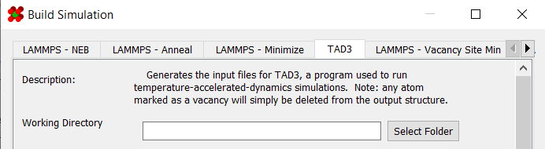

Temperature Accelerated Dynamics (TAD)
Temperature accelerated dynamics (TAD) is a method that runs a simulation at a higher temperature to generate results for a lower temperature. The higher temperature allows for jumps to be sampled far faster than if the simulation were run at the lower temperature.
It is accessible in the "LAMMPS - TAD3" tab of the simulation generator dialog:

Note:
This simulation does not use LAMMPS or slurm. Instead, it requires the TAD3 simulator to be compiled and installed on your machine. A fork of it is available here.
Requirements
In order to build a TAD simulation, a structure with a non-zero bounding box must already be set up in the viewer:

Additionally, any atom marked as a vacancy (including starting vacancies) will be deleted upon generation.
General Options
The first set of options involve basic information about the simulation and structure:

| Field | Description |
|---|---|
| Working Directory | Location to generate the files to |
| Secondary Name | Name of simulation. This will decide the name of the output directory |
| Structure Name | Name of structure. Used in deciding file names of simulation outputs |
| Mass Table | Atomic masses to use in the simulation. Defaults to the masses defined in the atom styles table |
| Bounding Box | Bounding box of the structure. Defaults to the bounding box already defined for the structure |
Potentials Options
The next set of options controls the potential coefficients and potential style used in the simulation.

| Field | Description |
|---|---|
| Pair Coefficients | Coefficients used in the pair potentials |
In order for a simulation to be considered valid, you must have enough potentials for all elements:


For convenience, both potential coefficients and styles can be saved and loaded. More information on saving/loading potential coefficients can be found here. The program does not support other potential styles for TAD3 at this time.
TAD Options
A legion of options are available for configuring TAD3. However, it is beyond the scope of this documentation to fully describe the features of TAD3. That said, hovering over any of the options in the simulation builder dialog will display a tooltip briefly describing its purpose.